Home
Familiengeschichte

Arbeit & Archiv
Kontakt
Familiengeschichte - Inhalt
Familiengeschichte: Paeskens Peuskens Peusquens
FML Hubert von Peusquens
Genealogie Familienblaetter
Ursprungsort der Familie - Heerlen Niederlande
Schallenberg Köln Peusquens Düsseldorf
Familiengeschichte: Paeskens - Peuskens - Peusquens
FML Hubert von Peusquens
Genealogie Familienblaetter
Ursprungsort der Familie - Heerlen Niederlande
Schallenberg Köln Peusquens Düsseldorf